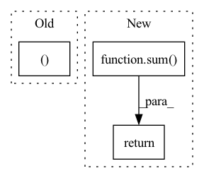

Pattern ID :1835

Before Change
// sum(-logP) / ()
// bppLoss = (F.cross_entropy(l1, c1, reduction="mean") + F.cross_entropy(l2, c2, reduction="mean")) / math.log(2)
l1 = l1.mean((2,3))
l2 = l2.mean((2,3))
posterior1 = torch.distributions.Categorical(logits=l1)
After Change
reg = torch.distributions.kl_divergence(posterior, prior).mean()
regs.append(reg)
return ssimLoss, contextLoss, sum(regs)
class CompressionLossQ(nn.Module):
def __init__(self):
In pattern: SUPERPATTERN
Frequency: 3
Non-data size: 3
Instances
Fragment ID: 7134616
Project Name: xiaosu-zhu/mcquic
Commit Name: 290ac3b044e8dcee03a63e86c2356c47628be8a6
Time: 2021-09-16
Author: xiaosu.zhu@outlook.com
File Name: src/mcqc/losses/quantization.py
M Class Name: CompressionLossBig
N Class Name: CompressionLossBig
M Method Name: forward(4)
N Method Name: forward(8)
M Parent Class: nn.Module
N Parent Class: nn.Module
M File Name: src/mcqc/losses/quantization.py
N File Name: src/mcqc/losses/quantization.py
M Start Line: 137
M End Line: 164
N Start Line: 140
N End Line: 158
'>
Before Change
def forward(self, score, target):
ph, pw = score.size(2), score.size(3)
h, w = target.size(1), target.size(2)
if ph != h or pw != w:
score = F.upsample(
input=score, size=(h, w), mode="bilinear")
After Change
weights = config.LOSS.BALANCE_WEIGHTS
assert len(weights) == len(score)
return sum([w * self._forward(x, target) for (w, x) in zip(weights, score)])
class OhemCrossEntropy(nn.Module):
def __init__(self, ignore_label=-1, thres=0.7,
'>
Fragment ID: 7134618
Project Name: chenjun2hao/ddrnet.pytorch
Commit Name: 3ce340bc520946fb220e83075f6e015bbe87cfe5
Time: 2019-12-12
Author: hsfzxjy@gmail.com
File Name: lib/core/criterion.py
M Class Name: CrossEntropy
N Class Name: CrossEntropy
M Method Name: forward(3)
N Method Name: forward(3)
M Parent Class: nn.Module
N Parent Class: nn.Module
M File Name: lib/core/criterion.py
N File Name: lib/core/criterion.py
M Start Line: 20
M End Line: 28
N Start Line: 36
N End Line: 42
'>
Before Change
loss_hard = loss[loss > self.thresh]
if loss_hard.numel() < n_min:
loss_hard, _ = loss.topk(n_min)
return torch.mean(loss_hard)
After Change
def forward(self, preds, labels: Tensor) -> Tensor:
if isinstance(preds, list):
return sum([w * self._forward(pred, labels) for (pred, w) in zip(preds, self.aux_weights)])
return self._forward(preds, labels)
class Dice(nn.Module):
'>
Fragment ID: 7134611
Project Name: sithu31296/semantic-segmentation
Commit Name: b68900992fb24dd5166b2b34e3d35d19493d747d
Time: 2021-08-21
Author: sithu31296@gmail.com
File Name: utils/losses.py
M Class Name: OhemCrossEntropy
N Class Name: OhemCrossEntropy
M Method Name: forward(3)
N Method Name: forward(3)
M Parent Class: nn.Module
N Parent Class: nn.Module
M File Name: utils/losses.py
N File Name: utils/losses.py
M Start Line: 25
M End Line: 37
N Start Line: 46
N End Line: 49